This page gathers basic information about the Devanagari script and its use for the modern Hindi language. It aims (generally) to provide an overview of the orthography and typographic features, and (specifically) to advise how to write Hindi using Unicode.
Phonetic transcriptions on this page should be treated as an approximate guide, only. Many are more phonemic than phonetic, and there may be variations depending on the source of the transcription.
Select part of this sample text to show a list of characters, with links to more details. Change size: 28px
अनुच्छेद १. सभी मनुष्यों को गौरव और अधिकारों के मामले में जन्मजात स्वतन्त्रता और समानता प्राप्त है । उन्हें बुद्धि और अन्तरात्मा की देन प्राप्त है और परस्पर उन्हें भाईचारे के भाव से बर्ताव करना चाहिए ।
अनुच्छेद २. सभी को इस घोषणा में सन्निहित सभी अधिकारों और आज़ादियों को प्राप्त करने का हक़ है और इस मामले में जाति, वर्ण, लिंग, भाषा, धर्म, राजनीति या अन्य विचार-प्रणाली, किसी देश या समाज विशेष में जन्म, सम्पत्ति या किसी प्रकार की अन्य मर्यादा आदि के कारण भेदभाव का विचार न किया जाएगा । इसके अतिरिक्त, चाहे कोई देश या प्रदेश स्वतन्त्र हो, संरक्षित हो, या स्त्रशासन रहित हो या परिमित प्रभुसत्ता वाला हो, उस देश या प्रदेश की राजनैतिक, क्षेत्रीय या अन्तर्राष्ट्रीय स्थिति के आधार पर वहां के निवासियों के प्रति कोई फ़रक़ न रखा जाएगा ।
Usage & history
Devanagari is used in India and Nepal for almost 200 languages, making it the fourth most widely adopted writing system in the world. Among the others, it is the script used for writing Sanskrit and Hindi.
देवनागरीd̪eːʋˈnaːɡri
Devanagari is a descendant of the 3rd century BCE Brahmi script through the Gupta script and then the closely related Nagari script. The modern standardised form of Devanagari was in use by about 1000 CE. An early version in the Kutila inscription of Bareilly, dated to 992 CE, demonstrates the emergence of the horizontal bar to group letters belonging to a word.
It has long been used traditionally by religiously educated people throughout South Asia to record and transmit information, and often appears in parallel with a wide variety of local scripts.
Devanagari is an abugida. Consonant letters have an inherent vowel sound. Combining vowel-signs are attached to the consonant to indicate that a different vowel follows the consonant. See the table in the right-hand column for a brief overview of features of the Hindi language.
Devanagari text runs left-to-right in horizontal lines.
Orthographic syllables (as opposed to phonetic syllables) play a significant role in Devanagari. An orthographic syllable starts at the beginning of any cluster of consonants and incorporates the whole cluster plus any following vowels and diacritics.
Phonetically, Hindi, like other Indic languages, has four forms of plosives, illustrated here with the bilabial stop: unvoiced p, voiced b, aspirated pʰ, and murmured bʱ. It also has a set of retroflex consonants. These are all represented separately in the orthography.
The 33 consonant letters used for Hindi are supplemented by repertoire extensions for 8 more non-native sounds by applying the nukta diacritic to characters.
Consonant clusters at any location are normally indicated using the virama between consonants. This results in a large number of conjunct forms expressed using half-forms, stacked consonants, and ligated glyphs. Occasionally, a visible virama is used.
As part of a cluster, RA has special forms. When initial in an orthographic syllable it appears as a hook at the top right of the whole syllable. When non-initial it appears as one of 2 special marks applied to the other consonants.
Word-final consonant sounds may be represented by 2 dedicated combining marks (anusvara & visarga), but are generally ordinary consonants that are not marked by a virama. Also, the inherent vowel of a penultimate consonant in a word of 3 syllables that ends in a non-inherent vowel is usually elided, and not marked as such.
The Hindi orthography has an inherent vowel, and represents vowels using 9-11 vowel-signs, including 1 prescript and no circumgraphs. All vowel-signs are combining marks, and are stored after the base character.
There are 10-12 independent vowels, one for each vowel sound, including the inherent vowel, and these are used to write all standalone vowel sounds.
There are no composite vowels.
Vowels may be nasalised, using the candrabindu diacritic.
Hindi uses native number digits.
The Unicode Devanagari block contains more characters than other indic scripts, partly because it serves as a pivot script for transliterations of other scripts.
Character lists show:
Character index
This section lists characters used for Hindi, and also separately lists other characters in the Devanagari script blocks. For descriptions of usage, click on ↓.
The effective unit of the writing systems is the orthographic syllable, consisting of a consonant and vowel (CV) core and, optionally, one or more preceding consonants, with a canonical structure of (((C)C)C)V.u
Consonant letters by themselves constitute a CV unit, where the V is an inherent vowel, whose exact phonetic value may vary by writing system. Independent vowels also constitute a CV unit, where the C is considered to be null. A dependent vowel sign is used to represent a V in CV units where C is not null and V is not the inherent vowel. u
In some cases, a phonological diphthong, such as Hindi जाओɟāọ̄ is actually written as two orthographic CV units, where the second of these units is an independent vowel letter. u
Two diacritics (generally classified as vowels) can be used to represent a syllable-final nasal or an unvoiced aspiration. Medial consonants are catered for by the consonant cluster model. Diacritics are also used to nasalise vowel sounds.
Vowels
Vowel sounds
Click on the sounds to reveal locations in this document where they are mentioned.
Phones in a lighter colour are non-native or allophones. Source Wikipedia.
Front
Central
Back
Close
ɪ iː
ʊ uː
Close-mid
eː
ə
oː
Open-mid
ɛː
ɔː
Open
æː
ɑː
The phoneme ə is often written a in phonemic transcriptions. Its pronunciation may also be slightly lower (such as ɐ).
iː and uː in word-final position are typically shortened to i and u,wp,#Vowels eg. शक्तिवस्तु
Where ɦ has inherent vowels on either side, those vowels may become ɛ, eg. कहनाkhnākɛɦɛnaːto say A similar process occurs for word-final ɦ,wp,#Vowels eg. कहkhkəɦsay!
The inherent vowel is typically transcribed as a, and pronounced ə. So क [U+0915 DEVANAGARI LETTER KA] is actually pronounced kə.
Vowel-signs
Non-inherent vowel sounds that follow a consonant are represented using vowel-signs, eg. की [U+0915 DEVANAGARI LETTER KA + U+0940 DEVANAGARI VOWEL SIGN II] is pronounced kiː.The following combining marks are also used to indicate vowel sounds.
ि␣ी␣ु␣ू␣े␣ो␣ै␣ौ␣ा
CLDR also includes the following:
ॅ␣ॉ
Devanagari vowel-signs are all combining characters. A single Unicode character is used per base consonant, and there are no vowel-signs with multiple parts. All vowel-signs are typed and stored after the base consonant, and the font puts them in the correct place for display.
Half the vowel-signs are spacing combining characters, meaning that they consume horizontal space when added to a base consonant.
One vowel-sign appears to the left of the base consonant letter or cluster, eg. दिन
This is a combining mark that is always typed and stored after the base consonant. The font places the glyph before the base consonant.
It is actually placed before the start of the syllable. This means that a word with a consonant cluster at the start separates the prescript vowel from any postscript vowels by more than one consonant character, eg. शक्ति
Nasalisation
ँ [U+0901 DEVANAGARI SIGN CANDRABINDU] nasalises the vowel in a syllable, eg. मुँहmuŋ̽hmouthAny vowel in Hindi can be nasalised in this way, except for the vocalics. s
When a vowel-sign rises above the head line, the glyph for this character may be simplified to just a dot (which resembles the anusvara).sIt appears that this is normally achieved by using an anusvara instead of candrabindu, eg. हैं
Vowel absence
The inherent vowel is not always pronounced. For example in Hindi it is not usually pronounced at the end of a word,
although a ghost echo may appear after a word-final cluster of consonants, eg. योग्यyōg͓yjogjᵊराष्ट्रrāʂ͓ʈ͓rɾəstɾᵊ
In
addition Hindi has a general rule that when a word has three or more syllables and ends in a vowel other than the inherent a, the penultimate vowel
is not pronounced, eg. compareसमझsmjʱsəməɟʱसमझाsmjʱāsəmɟʱaːandरहनrhnrəhənरहनाrhnārəhnaː (For a number of reasons,
however, this rule does not always hold.)
Devanagari uses ् [U+094D DEVANAGARI SIGN VIRAMA] (called halant in Hindi) to kill the inherent vowel after a consonant. The virama is rarely seen. As just mentioned, no virama is used at the end of a word, or in the penultimate syllable where the above rules apply. The virama is also usually hidden when the consonant is part of a consonant cluster (see clusters). The virama is visible, however, if it isn't followed by a consonant, eg. the following explicitly represents just the sound k,क्k͓
Standalone vowels
Devanagari represents standalone vowels using a set of independent vowel letters. The set contains a character to represent the inherent vowel sound.
Independent vowels used by Hindi:
इ␣ई␣उ␣ऊ␣ए␣अ␣ओ␣ऐ␣औ␣आ
CLDR also includes the following:
ऍ␣ऑ
Note the sound difference between the use of a standalone vowel vs. a vowel-sign after a consonant:नईnị̄nəiːनीnīniː
Encoding choices
Devanagari is a script where different sequences of Unicode characters may produce the same visual result. Here we look at those related to vowels.
The single code points on the left should be used, rather than the sequences on the right, because they are not made the same by normalisation. Therefore the content will be regarded as different, which will affect searching and other operations on the text.
A number of glyphs for independent vowels look as if they could also be composed using multiple code points, however, most fonts don't provide the necessary positioning rules to make the outcome look right.
The bottom line is that a single, precomposed code point should always be used for vowel-signs and independent vowels.
Vowel to script mapping
The following tables show how the above vowel sounds map to characters or sequences of characters. Both dependent vowel-signs (d) and independent vowels (i) are shown.
In Devanagari, vocalics are available both as vowel-signs and independent vowels.
Hindi generally uses just one vocalic.
ृ␣ऋ
Other vocalics are used for Sanskrit.
ॄ␣ॢ␣ॣ␣ॠ␣ऌ␣ॡ
Consonants
The 33 consonant letters used for Hindi are supplemented by repertoire extensions for 8 more non-native sounds by applying the nukta diacritic to characters.
Consonant clusters at any location are normally indicated using the virama between consonants. This results in a large number of conjunct forms expressed using half-forms, stacked consonants, and ligated glyphs. Occasionally, a visible virama is used.
As part of a cluster, RA has special forms. When initial in an orthographic syllable it appears as a hook at the top right of the whole syllable. When non-initial it appears as one of 2 special marks applied to the other consonants.
Word-final consonant sounds may be represented by 2 dedicated combining marks (anusvara & visarga), but are generally ordinary consonants that are not marked by a virama. Also, the inherent vowel of a penultimate consonant in a word of 3 syllables that ends in a non-inherent vowel is usually elided, and not marked as such.
Consonant sounds
Click on the sounds to reveal locations in this document where they are mentioned.
Phones in a lighter colour are non-native or allophones. Source Wikipedia.
labial
dental
alveolar
post-
alveolar
retroflex
palatal
velar
uvular
glottal
stop
pb pʰbʱ
td tʰdʱ
ʈɖ ʈʰɖʱ
kɡ kʰɡʱ
q
ʔ
affricate
t͡ʃd͡ʒ t͡ʃʰd͡ʒʱ
fricative
fv
sz
ʃ
ʂ
xɣ
hɦ
nasal
m
n
ɳ
ɲ
ŋ
approximant
ʋw
l
j
trill/flap
rɾ
ɽɽʱ
Labial
Dental
Alveolar
Palatal
Retroflex
Velar
Uvular
Glottal
Stop
p pʱ bbʱ
ttʱ ddʱ
ʈʈʱ ɖɖʱ
kkʱ ɡɡʱ
q
ʔ
Affricate
t͡ʃt͡ʃʱ d͡ʒd͡ʒʱ
Fricative
f v
s z
ʃ
ʂ
x ɣ
h ɦ
Nasal
m
n
ɲ
ɳ
ŋ
Approximant
ʋ
l
j
Trill/flap
ɾ rʱ
ɽ ɽʱ
Hindi, like other Indic languages, has four forms of plosives, illustrated here with the bilabial stop: unvoiced p, voiced b, aspirated pʰ, and murmured bʱ. It also has a set of retroflex consonants.
v and w are allophones of ʋ in Hindi. w typically occurs between a consonant and vowel,wp,#Allophony_of_[v]_and_[w] eg. compare पकवानव्रत
Basic set of consonants, used for Hindi and Sanskrit. (Phonetic information for Hindi.)
Stops
प␣फ␣ब␣भ␣त␣थ␣द␣ध␣ट␣ठ␣ड␣ढ␣क␣ख␣ग␣घ
Affricates
च␣छ␣ज␣झ
Fricatives
व␣स␣श␣ष␣ह
Nasals
म␣न␣ञ␣ण␣ङ
Liquids
व␣र␣ल␣य
Repertoire extension
़ [U+093C DEVANAGARI SIGN NUKTA] is used to represent foreign sounds, eg. in ख़ारीदारीkʱˑārīdārīxaːriːdaːrishopping the dot changes खkʱ to ख़x. Here is a list of graphemes used in Hindi that combine nukta with an existing consonant.
क़␣फ़␣ज़␣झ़␣ख़␣ग़␣ड़␣ढ़
The nukta should always be typed and stored immediately after the consonant it modifies, and before any combining vowels or diacritics.
The Unicode block also contains the following precomposed code points for the sequences used in Hindi.
क़␣फ़␣ज़␣ख़␣ग़␣ड़␣ढ़
The Unicode Standard recommends not to use the precomposed code points for Hindi, but instead to use the base+nukta sequences. See also nukta_encoding for more information.
Syllable-Final consonants
Although traditionally classified as vowels, 2 diacritics represent syllable-final consonant sounds.
ं␣ः
ं [U+0902 DEVANAGARI SIGN ANUSVARA] represents a nasal that is homorganic with a following consonant. It is positioned over the previous consonant, eg. हिंदी
Most words that use the anusvara can also be written using the consonant itself, eg. हिन्दीhin͓dī although in some cases the anusvara form is more common. For example, पंजाब is much more common than पञ्जाबpɲ͓jāb
ः [U+0903 DEVANAGARI SIGN VISARGA] represents a voiceless h used after a vowel, usually at the end of a word, eg. छःcʱh̽cʱəhsixदुःखduh̽kʱgriefMostly limited to Sanskrit loan words.
See also the candrabindu diacritic, which nasalises a vowel.
Consonant clusters
When the shapes of constituent consonants in a cluster are changed or merged to indicate the lack of intervening vowels, this is referred to as a conjunct.
The absence of a vowel sound between two or more consonants can be visually indicated in one of the following ways.
Create a conjunct. There are a number of possibilities here:
Reduce the shape of all consonants in the cluster except the last to a 'half-form'.
Reduce a non-initial consonant in size and shape and position it below the first.
Create a ligature combining the two shapes (where neither may be readily identified).
The letter ra has its own idiosyncratic way of combining with other consonants, whether it precedes or follows them.
Show a visible virama below the non-final consonants in the cluster.
No indication, although there are usually generalised pronunciation rules that allow readers to spot these locations. Examples of these rules are given in the section about the inherent vowel.
The font usually determines which visual method is used, although it is possible to influence this (see below).
Half-forms
A half-form is typically created by removing the vertical line in the consonant shape, where there is one. (The vertical line is associated with the inherent vowel, and around two-thirds of Devanagari consonant shapes contain one.) There is often some additional tweaking of glyphs in order to join the components neatly.
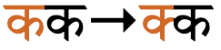
Examples of conjuncts formed by using half-forms.
Vertical stacks
This is more common for Sanskrit, and few modern fonts reorder glyphs in this way, or do so for a limited number of combinations.
Conjuncts formed by subjoining non-initial consonants.
Ligated conjuncts
Typically, only a small number of clusters are combined in a way that makes it difficult to spot the component parts. This is, however, the default for two particular clusters: क्षk͓ʂkṣkʃज्ञɟ͓ɲjñɡj
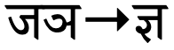
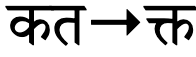
Conjuncts formed by ligation.
Conjuncts with ra
When र [U+0930 DEVANAGARI LETTER RA]follows another consonant, it is typically rendered as a small, diagonal line to the left, eg. क्र ग्र भ्रAfter 6 consonants, however, it is rendered as an upside-down v shape below, ie. ट्र ठ्र ड्र ढ्र ड़्र छ्रAfter त [U+0924 DEVANAGARI LETTER TA] it produces त्र
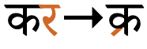
Conjuncts formed by a following ra.
When ra precedes another consonant, it is rendered as a small hook above the vertical line in the cluster, eg. र्कr͓kर्लr͓lWhere it precedes a cluster using half-forms, it is aligned with the vertical line of the trailing consonant, eg. र्स्पr͓s͓pHowever, if there is a spacing vowel-sign with a vertical line to the right of the cluster, it aligns with that, eg. र्काr͓kāर्कीr͓kī(This illustrates how the basic units of the script are orthographic syllables.)
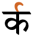
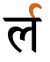
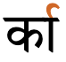
The horizontal position of the hook for conjuncts formed by a preceding ra follows the main vertical bar of the syllable.
Visible virama
The ability to form conjuncts depends on the richness of the font. Where a font is not able to produce a half-form or ligature, etc., it will leave a visible virama glyph below the initial consonant(s) to indicate the missing vowel sound, eg. क्कk͓k
An important consequence of representing clusters in this way is that the syllable boundaries are different. For example, if we follow the cluster with a left-positioned vowel-sign, it will now appear after the virama, rather than before the cluster, eg. compare क्किक्किThis change is also reflected in segmentation of the text for line-breaking, inter-character spacing, etc.
A visible virama may also be used with a single consonant, to indicate that it is to be pronounced without the inherent vowel, eg. क्k
Consonant lengthening
Most native consonants may be lengthened, but not bʱ, ɽ, ɽʱ, or ɦ. Geminate consonants are always medial and preceded by one of ə, ɪ, or ʊ.wp,#Consonants
Lengthened (geminated) consonants are indicated in the script using the same mechanisms as for
clusters.
Using ZWJ & ZWNJ
The examples in the previous subsection used U+200C ZERO WIDTH NON-JOINER to force the production of a visible virama, rather than a half-form. For example:
U+200D ZERO WIDTH JOINER can be used to produce a half-form, such as क्षrather than क्षIt can also be used to produce standalone half-forms (for educational text) such as घ्
Encoding choices for nuktas
The way the Unicode Standard recommends to type and store graphemes with nuktas is a little unusual for Devanagari. Here we look at alternative strategies for all uses of the nukta in the Devanagari block (usage recommendations for Hindi are given in the section nukta), and consider the effects of normalising the text using Unicode Normalisation Form D (NFD), and Normalisation Form C (NFC).
For the following alternatives (unusually) the decomposed form is recommended by the Unicode Standard. NFC does not recombine the parts into precomposed characters. Instead, normalisation produces decomposed forms for both approaches using NFC and NFD, so both approaches are canonically equivalent.
The next batch of characters produces precomposed characters under NFC, and decomposed under NFD. Both approaches are therefore canonically equivalent, even though the behaviour is different. In this case, the Unicode Standard recommends using the precomposed form.
In practise, it's hard to envisage content authors being aware of, let alone respecting, rules about whether they should precomposed or decomposed forms. Keyboards or other input mechanisms, or perhaps sometimes applications that automatically normalise can perhaps guide users to the recommended practise, but it's likely that Devanagari text will always contain a mixture of forms for these graphemes.
ण [U+0923 DEVANAGARI LETTER NNA]. Brought into Hindi via Sanskrit loan words, but casually pronounced n and ɽ̃ is a common allophone. Does not appear initially.wp,#External_borrowing
CLDR lists the following additional characters with the general property of letter.
ऽ␣ॐ
Used for vowel elision in Sanskrit, the main function of ऽ [U+093D DEVANAGARI SIGN AVAGRAHA] in Hindi is to show that a vowel is sustained in a cry or a shout,ws eg. आईऽऽऽ!ạ̄ị̄´´´!
Devanagari has a set of digits, that can be referred to as 'hindi' numerals. They are used regularly.
०␣१␣२␣३␣४␣५␣६␣७␣८␣९
The CLDR standard-decimal pattern is #,##,##0.###. The standard-percent pattern is #,##,##0%.cldr
An interesting feature of large numbers written in India is that they apply groupings of two, rather than three, digits between commas (even when using european digits).
20,00,000
Two million, written with Indian comma separators.
Currency
The CLDR standard format for currency is ¤#,##,##0.00.cldr
₹ [U+20B9 INDIAN RUPEE SIGN] is the symbol introduced by the Government of India in 2010 as the official currency symbol for the Indian rupee (INR).u
It is distinguished from ₨ [U+20A8 RUPEE SIGN], which is an older symbol not formally tied to any particular currency.u Follow that link for more information about the rupee.
Text direction
Text is normally written horizontally, left to right.
Glyph shaping & positioning
This section brings together information about the following topics:
writing styles;
cursive text;
context-based shaping;
context-based positioning;
baselines, line height, etc.;
font styles;
case & other character transforms.
Devanagari text is not cursive (ie. joined up like Arabic), however there is a significant amount of interaction between glyphs around consonant clusters.
The orthography has no case distinction, and no special transforms are needed to convert between characters.
Context-based shaping
The shape of a character when displayed can vary, often dramatically, according to the context.
One very common example in most indic scripts is the handling of 'conjunct consonants', ie. groups of consonants with no intervening vowel sounds. Since consonants in indic scripts have an inherent vowel sound, when two consonants are combined this way you have to indicate that the vowel of the initial consonant is suppressed. This is normally done by altering the shape of the first consonant, or merging the shape of the two consonants.
To tell the font to do this, in Unicode you add ्[U+094D DEVANAGARI SIGN VIRAMA] between the two consonants. This produces the change in the shapes of the glyphs that indicates to the reader that this is a conjunct. The actual outcome is font dependent. For the word below which contains a conjunct of two ल[U+0932 DEVANAGARI LETTER LA] characters (making a long L sound) you may see a 'half-form' used for the first LA (shown on the left) or you may see (as shown on the right) a ligated form.
Alternative representations of a geminated l consonant.
There are other types of context-based shaping, which are font specific. One is shown below. The width of the glyph for ि[U+093F DEVANAGARI VOWEL SIGN I] differs according to the base character to which it is attached.
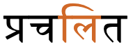
Context-sensitive shaping of the glyph for i.
Multiple combining characters
Diacritics regularly combine with a vowel-sign attached to the same consonant or consonant cluster. The example below shows two combining characters that are positioned above the base character in a very common form of the verb 'to be'. One is ै[U+0948 DEVANAGARI VOWEL SIGN AI], and the other the nasalisation mark ं[U+0902 DEVANAGARI SIGN ANUSVARA].
Multiple combining characters over one base character.
Context-based positioning
Combining characters need to be placed in different positions, according to the context.
The example on the left below displays the dot (anusvara) immediately over the long vertical stroke. The example to the right has moved the dot slightly to the right in order to accomodate the vowel sign.
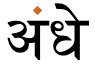
Context-sensitive placement of the anusvara diacritic.
In the following the image to the left shows the normal position of ू[U+0942 DEVANAGARI VOWEL SIGN UU], beneath the first letter. The example on the right shows that character displayed higher up and to the right when combined with the base character र[U+0930 DEVANAGARI LETTER RA].
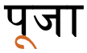
Context-dependent placement of the glyph representing ra.
Font styles
tbd
Structural boundaries & markers
Graphemes
A number of text operations work on the basis of graphemes, rather than code points, such as line-breaking, cursor movement, backspacing, vertical setting, justification, etc. Usually the minimal unit correlates with the Unicode concept of grapheme clusters, but not always.
Conjuncts
Conjuncts and any dependent combining characters should never be split.
This creates a problem when dealing with Unicode grapheme clusters, because they stop after reaching a virama. So conjuncts usually contain multiple grapheme clusters. This produces incorrect segmentation as seen on the left in fig_grapheme_conjuncts. Applications need to tailor the grapheme cluster rules to avoid splitting conjuncts.
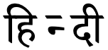
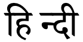
Segmentation of the word हिन्दी़hin͓dị̄: using grapheme clusters (left), and how it should be (right).
Unfortunately, this is harder than it seems, because whether a conjunct is formed or not usually depends on the capabilities of the font – it cannot be determined solely by looking at the code points in memory. If a font doesn't contain the glyphs to create a conjunct it will render the consonant cluster with a visible virama. In that case, the grapheme cluster approach is appropriate.
Observation: It may be that justification and letter-spacing place spacing between vowel-sign glyphs and the glyph of their base characters in some circumstances. This kind of unit requires manipulation of the glyphs in the text, rather than the code points
Word boundaries
Words are separated by spaces.
Devanagari has hyphenated words – mainly conjoined nouns,i eg. लाभ-हानिlābʱ-hāniprofit-lossमाता-पिताmātā-pitāparents
Devanagari uses standard Latin punctuation, but also has its own version of a full stop, ।[U+0964 DEVANAGARI DANDA], which can be seen in the sample text above. (Although an ASCII full stop is also seen after the lead-in text for each article.)
The default quote marks for Hindi are “ [U+201C LEFT DOUBLE QUOTATION MARK] at the start, and ” [U+201D RIGHT DOUBLE QUOTATION MARK] at the end.cldr
When an additional quote is embedded within the first, the quote marks are ‘ [U+2018 LEFT SINGLE QUOTATION MARK] and ’ [U+2019 RIGHT SINGLE QUOTATION MARK].cldr
Emphasis
Italicisation and bolding are not traditionally used for highlighting text in Devanagari.
Devanagari is normally wrapped at word boundaries.
Hyphenation
Devanagari text can be hyphenated during line wrap.
Line-edge rules
According to ilreq, a line should not start with any of the following characters.
,␣.␣:␣;␣।␣॥␣)␣]␣}␣>␣+␣*␣/␣=␣_␣|␣~␣%
Line breaking should also not move a danda or double danda to the beginning of a new line, even if they are preceded by a space character. These punctuation characters should behave in the same way as a full stop does in English text.
Presumably, similar rules apply for the end of a line.
Character properties
Characters used for the thisLanguage language have the following assignments related to line-break properties.
AL
120
अ आ इ ई उ ऊ ऋ ऍ ए ऐ ऑ ओ औ क ख ग घ ङ च छ ज झ ञ ट ठ ड ढ ण त थ द ध न प फ ब भ म य र ल व श ष स ह ऽ ॐ क़ ख़ ग़ ज़ ड़ ढ़ फ़ ॰ ऍ ऑ ऽ ॐ
BA
4
। ॥
CM
38
ँ ं ः ़ ा ि ी ु ू ृ ॅ े ै ॉ ो ौ ् ॅ ॉ
NU
20
० १ २ ३ ४ ५ ६ ७ ८ ९
Show legend ul,#Properties
AL (ordinary alphabetic and symbol characters) requires other characters to provide break opportunities; otherwise, unless tailored rules are applied, no line breaks are allowed between pairs of them.
BA (break after) indicates that it is normal to break after that character.
NU (number) behaves like ordinary characters (AL) in the context of most characters but activate the prefix and postfix behavior of prefix and postfix characters.
Text alignment & justification
Justification is done, principally, by adjusting the space between words. (I have no information about whether high-end systems also adjust inter-character spacing slightly if inter-word doesn't resolve the issue, or to improve aesthetics.)
Devanagari content does sometimes enlarge the first part of the first word in a paragraph, in a similar way to drop caps. Instead of enlarging just the first letter in the word, it is normal to enlarge the first syllable. If the first character is the beginning of a conjunct, the whole conjunct should be included in the styling.
Enlarged syllable styling at the start of a paragraph.
In theory, the top line of the characters should align in the large text and the following first line, however it is possible to easily find examples where this is not accurate.
It is very common to see such initial-syllable enlargement centred inside a coloured box.
Enlarged syllable styled inside a coloured box.
In the boxed style, the box itself is usually aligned with the top of the first line of text and the bottom of the last, and the highlighted character(s) are centred horizontally and vertically in the box.
In both styles shown above, any punctuation such as opening quotes and opening parentheses should also be included in the initial styling.
This section is for any features that are specific to thisScript and that relate to the following topics:
general page layout & progression;
grids & tables;
notes, footnotes, etc;
forms & user interaction;
page numbering, running headers, etc.
Character lists
Version 12.0 of the Unicode Standard has the following blocks dedicated to the Devanagari script (numbers in lists are non-ASCII only):


 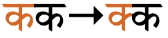
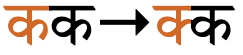


 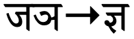
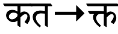
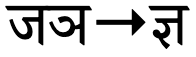
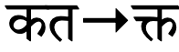

 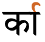
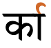


 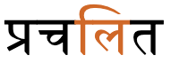
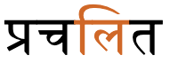